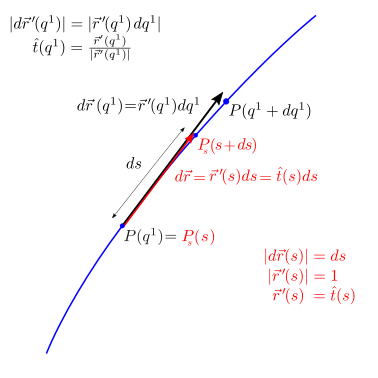

28.1. Cenni di geometria differenziale#
28.1.1. Parametrizzazione dello spazio#
Uno spazio può essere descritto tramite l’uso di un sistema di coordinate, composto da una \(n\)-upla di coordinate indipendenti \(\left( q^i \right)_{i = 1:n}\).
Definition 28.1 (Parametrizzazione regolare)
Una parametrizzazione di una regione dello spazio spazio è regolare se è una funzione biunivoca,
tra i punti \(P\) dello spazio e i valori delle coordinate \(\left( q^i \right)\). In altre parole, a ogni \(n\)-upla \(\left( q^i \right)_{i=1:n}\) corrisponde uno e un punto \(P\) e viceversa.
todo
Conseguenze sulle funzioni delle coordiante dei punti in funzione delle coordiante: derivata non si annulla nel dominio…
Può essere necessario/utile definire più parametrizzazioni che coprono diverse zone del dominio…
Example 28.1 (Spazio \(E^2\): coordinate cartesiane)
Dopo aver scelto il punto \(O\) come origine, è possibile utilizzare un sistema di coordinate cartesiane \((q^1, q^2) = (x,y)\) e rappresentare un generico punto \(P\) dello spazio come
Example 28.2 (Spazio \(E^2\): coordinate polari)
Utilizzando un sistema di coordinate polari con la stessa origine \(O\) di un sistema di coordinate cartesiane, e l’asse di riferimento per l’angolo \(\theta\) coincidente con l’asse \(x\) del sistema di coordinate cartesiane, è possibile rappresentare le coordinate cartesiane in funzione delle coordinate polari \((q^1, q^2) = (r, \theta)\)
e un punto generico nello spazio - con una rappresentazione «mista» che usa le coordinate polari e i vettori \(\hat{x}\), \(\hat{y}\) ddella base cartesiana1 - come
Example 28.3 (Spazio \(E^3\): coordinate cartesiane)
Dopo aver scelto il punto \(O\) come origine, è possibile utilizzare un sistema di coordinate cartesiane \((q^1, q^2, q^3) = (x,y,z)\) e rappresentare un generico punto \(P\) dello spazio come
Example 28.4 (Spazio \(E^3\): coordinate cilindriche)
Utilizzando un sistema di coordinate polari con la stessa origine \(O\) di un sistema di coordinate cartesiane, gli assi \(z\) coincidenti, e l’asse di riferimento per l’angolo \(\theta\) coincidente con l’asse \(x\) del sistema di coordinate cartesiane, è possibile rappresentare le coordinate cartesiane in funzione delle coordinate polari \((q^1, q^2, q^3) = (r, \theta, z)\)
e un punto generico nello spazio - con una rappresentazione «mista» che usa le coordinate polari e i vettori \(\hat{x}\), \(\hat{y}\), \(\hat{z}\) della base cartesiana1 - come
Example 28.5 (Spazio \(E^3\): coordinate sferiche)
Utilizzando un sistema di coordinate polari con la stessa origine \(O\) di un sistema di coordinate cartesiane, gli assi \(z\) coincidenti, e l’asse di riferimento per l’angolo \(\theta\) coincidente con l’asse \(x\) del sistema di coordinate cartesiane, è possibile rappresentare le coordinate cartesiane in funzione delle coordinate polari \((q^1, q^2, q^3) = (R, \phi, \theta)\)
e un punto generico nello spazio - con una rappresentazione «mista» che usa le coordinate polari e i vettori \(\hat{x}\), \(\hat{y}\), \(\hat{z}\) della base cartesiana1 - come
28.1.1.1. Base naturale#
La paramterizzazione dello spazio permette di associare a ogni punto dello spazio una \(n\)-upla di coordiante. Usando una rappresentazione mista - scegliendo dei vettori di una base cartesiana con origine in \(O\), e coordiante generiche \(q^i\) - si può quindi rappresentare i punti dello spazio utilizzando le coordinate \(q^i\) desiderate e i vettori della base cartesiana,
o più esplicitamente per spazi 2-dimensionali
e per spazi 3-dimensionali
Definition 28.2 (Base naturale)
In ogni punto dello spazio, è possibile definire i vettori della base naturale indotta da una particolare scelta del sistema di coordinate \(\left( q^i \right)_{i:n}\) come le derivata parziali del punto \(P\) rispetto alle coordinate \(q^i\). I vettori della base naturale \(\left\{\vec{b}_i \right\}_{i=1:n}\) indotta dalle coordinate \(\left( q^i \right)_{i=1:n}\) sono quindi i vettori
In generale, come sarà chiaro dagli esempi, i vettori di una base naturale:
dipendono dal punto nello spazio nel quale vengono calcolati - o in altre parole sono funzioni delle coordinate \(q^i\)
non formano una base orto-normale
non hanno lunghezza unitaria
non sono omogenei nelle dimensioni, né adimensionali.
Definition 28.3 (Base fisica)
Nel caso in cui la base naturale sia ortogonale, è possibile definire una base fisica - orto-normale con vettori unitari e adimensionali - tramite un semplice processo di normalizzazione dei vettori della base,
La definizione di una base fisica, quando possibile, può rendere la rappresentazione di un vettore o di un campo vettoriale più «ordinata», avendo le componenti del vettore le stesse dimensioni fisiche della grandezza che viene rappresentata, poiché i vettori della base fisica sono adimensionali e di lunghezza unitaria - e quindi contenenti unicamente l’informazione vettoriale sulla direzione.
Example 28.6 (Spazio \(E^2\): coordinate cartesiane)
I vettori della base naturale sono
Ricordando le proprietà dei vettori di una base cartesiana todo link, è immediato verificare che la base naturale di un sistema di coordinate cartesiane è anche la sua base fisica (adimensionale non-dimensionale).
Example 28.7 (Spazio \(E^2\): coordinate polari)
I vettori della base naturale sono
E” semplice dimostrare che i due vettori sono ortogonali, ma il vettore \(\vec{b}_2\) non è adimenisonale, e ha modulo \(|\vec{b}_2| = r\). La base fisica - già introdotto nel capitolo sulla geometrica analitica todo link - è quindi
Example 28.8 (Spazio \(E^3\): coordinate cartesiane)
I vettori della base naturale sono
Ricordando le proprietà dei vettori di una base cartesiana todo link, è immediato verificare che la base naturale di un sistema di coordinate cartesiane è anche la sua base fisica (adimensionale non-dimensionale).
Example 28.9 (Spazio \(E^3\): coordinate cilindriche)
I vettori della base naturale sono
E” semplice dimostrare che i tre vettori sono ortogonali, ma il vettore \(\vec{b}_2\) non è adimenisonale, e ha modulo \(|\vec{b}_2| = r\). La base fisica - già introdotto nel capitolo sulla geometrica analitica todo link - è quindi
Example 28.10 (Spazio \(E^3\): coordinate sferiche)
I vettori della base naturale sono
E” semplice dimostrare che i tre vettori sono ortogonali, ma i vettori \(\vec{b}_2\), \(\vec{b}_3\) non sono adimenisonale, e hanno modulo \(|\vec{b}_2| = R\) e \(|\vec{b}_3| = R |\sin \phi|\). La base fisica - già introdotto nel capitolo sulla geometrica analitica todo link - è quindi
28.1.1.2. Curve coordinate#
28.1.1.3. Superfici coordinate#
28.1.2. Curve nello spazio#
Una curva \(\gamma\) nello spazio può essere rappresentata con la sua equazione parametrica,
cioè una funzione di una variabile \(q^1\), che associa a ogni valore del parametro \(q^1 \in Q\) il punto \(\vec{r}_\gamma(q^1)\) dello spazio euclideo \(E^n\) appartenente alla curva \(\gamma\).
Una parametrizzazione regolare rappresenta una funzione biunivoca tra i valori della variabile \(q^1\) e i punti nello spazio \(\vec{r}_{\gamma}(q^1)\). Questa condizione si riduce alla condizione che la derivata dei punti della curva rispetto al parametro non sia mai nulla, \(\vec{r}'(q_1) \ne 0\), \(\forall q^{1} \in Q\).
Definition 28.4 (Lunghezza d’arco)
Si definisce lunghezza d’arco il parametro \(s\) che permette la parametrizzazione \(\vec{r}_{\gamma,s}(s)\), \(s \in [s_a, s_b]\) della curva \(\gamma\) tale da avere
28.1.2.1. Elemento di curva#
La variazione del parametro \(q^1\) produce l’elemento infinitesimo di curva
tangente alla curva e di dimensione (lunghezza)
avendo ipotizzato una variazione positiva del parametro \(|d q^1| = d q^1 > 0\) per rimuovere il valore assoluto dalla variazione del parametro. Nel caso si utilizzi il parametro lunghezza d’arco \(s\) arc-length, vale
cioè la lunghezza dell’elemento di curva è uguale alla variazione del parametro lunghezza d’arco \(s\). Il vettore \(\vec{r}'_\gamma(s)\) di lunghezza unitaria corrisponde al versore tangente alla curva,
|
 |

28.1.3. Superfici nello spazio#
Una superficie \(S\) nello spazio può essere rappresentata con la sua equazione parametrica,
cioè una funzione di due variabili \(q^1\), \(q^2\), che associa a ogni coppia di valori \((q^1, q^2) \in Q\) il punto \(\vec{r}_S(q^1, q^2)\) dello spazio euclideo \(E^n\) appartenente alla superficie \(S\)
Una parametrizzazione regolare rappresenta una funzione biunivoca la coppia di variabili \((q^1, q^2)\) e i punti nello spazio \(\vec{r}_{S}(q^1, q^2)\). Questa condizione equivale alla condizione che…
28.1.3.1. Elemento di superficie#
La variazione dei parametri \(q^1\) e \(q^2\) produce i vettori infintesimi
tangenti alla superficie \(S\). Ricordando il significato geometrico del prodotto vettoriale tra due vettori in spazi euclidei, il prodotto vettoriale \(d \vec{r}_1 \times d \vec{r}_2\) produce un vettore normale alla superficie il cui modulo è uguale all’area \(d S\) del parallelogramma elementare con lati \(d \vec{r}_1\) e \(d \vec{r}_2\),
avendo ipotizzato una parametrizzazione \(q^1\), \(q^2\) della superficie con la direzione desiderata (orientazione della superficie) del vettore normale \(\hat{n} \, dS\), e sottinteso la dipendenza delle derivate parziali dalle variabili \(q^1\), \(q^2\) per non appesantire la notazione più del dovuto.
|
|


28.1.4. Volumi nello spazio#
Un volume nello spazio \(E^3\) si può essere rappresentato con una rappresentazione parametrica di \(E^3\),
cioè una funzione di tre variabili \(q^1, q^2, q^3\), che associa a ogni triple di valori \((q^1, q^2, q^3) \in Q\) il punto \(\vec{r}_V(q^1, q^2, q^3)\) dello spazio euclideo \(E^n\) appartenente al volume \(V\).
Una parametrizzazione regolare rappresenta una funzione biunivoca la tripla di variabili \((q^1, q^2, q^3)\) e i punti nello spazio \(\vec{r}_{V}(q^1, q^2, q^3)\). Questa condizione equivale alla condizione che…
28.1.4.1. Elemento di volume#
La variazione dei parametri \(q^1\), \(q^2\) e \(q^3\) produce i vettori infintesimi
Ricordando il significato geometrico del prodotto misto tra tre vettori in spazi euclidei, il prodotto vettoriale \(d \vec{r}_1 \times d \vec{r}_2 \cdot d \vec{r}_3\) produce uno scalare uguale al volume (con segno) del parallelepipedo elementare con spigoli \(d \vec{r}_1\), \(d \vec{r}_2\), \(d \vec{r}_3\),
avendo sottinteso la dipendenza delle derivate parziali dalle variabili \(q^1\), \(q^2, q^3\) per non appesantire la notazione più del dovuto.
|
|


Example 28.11 (Elemento di volume in coordinate cartesiane)
Example 28.12 (Elemento di volume in coordinate cilindriche)
Example 28.13 (Elemento di volume in coordinate sferiche)
- 1(1,2,3)
Questa rappresentazione può risultare utile quando è necessario svolgere derivate della posizione, poiché i vettori della base cartesiana sono costanti in tutto lo spazio e quindi la loro derivata è nulla. todo Aggiungere collegamenti a sezione derivate (esempi?) e alla cinematica in meccanica classica.